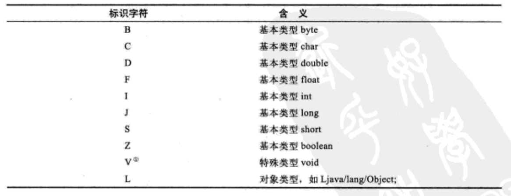

Class文件是一组以8字节为基础单位的二进制流，中间没有添加任何分隔符 Class文件格式采用一种类似于C语言结构体的伪结构来存储，这种伪结构中只有两种数据类型：
- 无符号数: 基本数据类型，以u1, u2, u4, u8分别代表1，2，4，8个字节的无符号数,用来描述数字，索引引用，数量值或是utf8编码构成的字符串值
- 表: 由多个无符号数或其他表作为数据项构成的复合数据类型，以"_info"结尾，用于描述有层次关系的复合结构的数据，整个Class文件本质上就是一张表
由于Class文件没有分隔符，当需要描述同一类型但数量不定的多个数据时，使用一个前置的容量计数器加若干个连续的数据项的形式，称这一系列连续的某一类型的数据为某一类型的集合
class文件的开头4个字节，用来确定文件是否能被虚拟机接受，并且确定jdk版本
常量池是Class文件结构中与其他项目关联最多的数据类型，也是占用class文件空间最大的数据项目之一
由于常量池中常量的数量是不固定的，所以在常量池的入口需要放置一项u2类型的数据，代表长两次容量计数值
常量池中的每一项常量都是一个表，共有11种结构各不相同的表结构数据，表开始的第一位都是一个u1类型的标志位tag，代表这个常量属于哪种常量类型。
其中tag是标志位,length值说明这个utf-8编码的字符串长度是多少字节，后面紧跟的长度为length字节的连续数据是一个使用utf-8略缩编码表示的字符串 Class文件中方法、字段等都需要引用CONSTANT_Utf8_info型常量来描述名称
可以使用javap工具输出Class文件的的字节码内容
javap -verbose xxx
- 文本字符串
- final常量
等等
- 类和接口的全限定名 Fully Qualified Name
- 字段的名称和描述符 Descriptor
- 方法的名称和描述符
常量池结束后的2个字节代表访问标志，包括：此class是类or接口，public,abstarct,final等
Class文件中由这三项数据来确定这个类的继承关系, 按顺序排列在访问标志之后。类索引和父类索引都为u2类型的索引值表示，他们各自指向一个类型为CONSTANT_Class_info的类描述符常量，通过CONSTANT_Class_info类型的常量中的索引值，可以找到定义在CONSTANT_Utf8_info类型的常量中的全限定名字符串, 接口索引为一组u2类型的数据的集合
字段表field_info用于描述接口或类中声明的变量，字段filed包括了类级变量或实例级变量，但不包括在方法内部声明的变量。描述一个字段需要包含的信息： access_flags:
- 字段的作用域（public，private， protected等）
- 类级or实例级变量（static修饰符）
- 可变性（final）
- 并发可见性（volatile，是否强制从主内存读写）
- 可否序列化（transient）
- 字段数据类型（基本类型，对象，数组）
- 字段名称
这些信息都是bool值，用标志位来表示，而字段名称，字段的数据类型无法固定，需要引用常量池中的常量来描述
字段表的最终格式： 其中：
- name_index 代表字段的简单名称，是对常量池的引用
- descriptor_index 代表字段和方法的描述符，也是对常量池的引用
三种特殊字符串的概念
- 类和接口的全限定名：如org/fenixsoft/clazz/TestClass 仅仅把类全名中的"."替换成了"/"，";"表示全限定名结束
- 简单名称：没有类型和参数修饰的方法或字段名称
- 方法和字段的描述符：描述字段的数据类型，方法的参数列表（包括数量、类型以及顺序）和返回值。基本数据类型及代表无返回值的void类型都用一个大写字符来表示，对象类型用L加对象的全限定名来表示，如下表

- 对于数组类型，每一维度使用一个前置的“[”字符描述 eg.java.lang.String[][] -> [[Ljava/lang/String; eg.int[] -> [I
- 参数列表按照参数的严格顺序放在一组小括号()之内
- 字段表集合不会列出从父类或接口中继承而来的字段，但有可能列出原本java代码中不存在的字段，如在内部类中为了保持对外部类的访问性，会自动添加指向外部类实例的字段。
Class文件存储格式对方法的描述与对字段的描述几乎完全一致，区别如下：
- 去掉了volatile, transient关键字
- 增加了synchronized, native, strictfp, abstract关键字
方法里的java代码，经过编译器编译成字节码指令之后，存放在方法属性表集合中名为Code的属性中。
属性表attribute_info，与Class文件中其他的数据项目要求严格的顺序，长度和内容不同，属性表集合的限制较宽松，不再要求各个属性表有严格的顺序。 只要不与已有的属性名重复，任何人实现的编译器都可以向属性表中写入自己定义的属性信息。 java虚拟机运行时会忽略掉它不认识的属性，以下为9项虚拟机实现应当能识别的属性
java程序方法体里面的代码经过javac编译器处理后，最终变为字节码指令存储在Code属性内，Code属性在方法表中使用。并非所有的方法表都必须存在这个属性，如接口或抽象类中的方法就不存在Code属性。
其中:
- attribute_name_index 是一项指向CONSTANT_Utf8_info型常量的索引，常量值固定为"Code", 它代表了该属性的属性名称
- attribut_length 指示了属性值的长度
- max_stack 代表了操作数栈深度的最大值，在方法执行的任意时刻，操作数栈都不会超过这个深度。虚拟机运行的时候需要根据这个值来分配栈帧frame中的操作栈深度
- max_locals 代表了局部变量表所需的存储空间，单位是Slot，即虚拟机为局部变量分配内存所使用的最小单位
- code_length 和 code 用来存储java源程序编译后生成的字节码指令 code_length代码字节码长度，code存储字节码指令的一系列字节流，每个字节码指令是一个u1类型的单字节，当虚拟机读取到code中的一个字节码时，找出对应的指令，并且可以知道这条指令后面是否需要跟随参数，以及参数应当如何理解。u1类型一共可以表达256条指令。
- code属性 class文件中最重要的一个属性，如果把一个java程序中的信息分为代码（code， 方法体中的java代码）和元数据（Metadata，包括类、字段、方法定义及其他信息）两部分，在整个class文件中，code属性用于描述代码，所有其他的数据项目描述元数据
- exception_table_length 和 exception_table 显示异常处理表,异常表是java代码的一部分，编译器使用异常表而不是简单的跳转命令来实现java异常及finally处理机制。
异常表：